Learn invariance once. Reuse it for every new policy.
Standard domain randomization couples visual invariance to task-specific policy weights. Every new policy must learn these invariances from scratch. INVAR separates representation learning from policy optimization, so the same frozen encoder can be reused across downstream tasks.
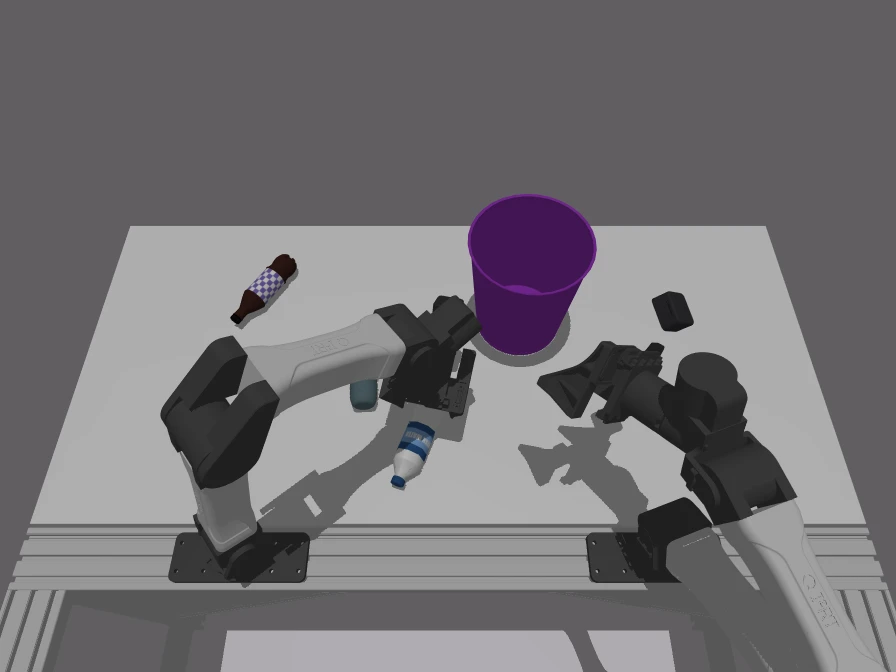
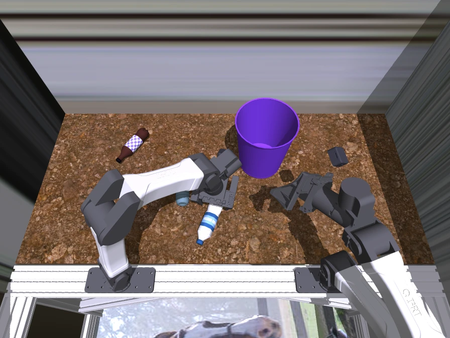
Randomize during encoder pretraining. Freeze INVAR and train each new policy on clean simulation images.
Visual invariance across
the sim-to-real gap.
Attention maps, patch-level PCA, and sim-to-real patch correspondence show how INVAR suppresses task-irrelevant appearance variation while preserving manipulation-relevant structure.
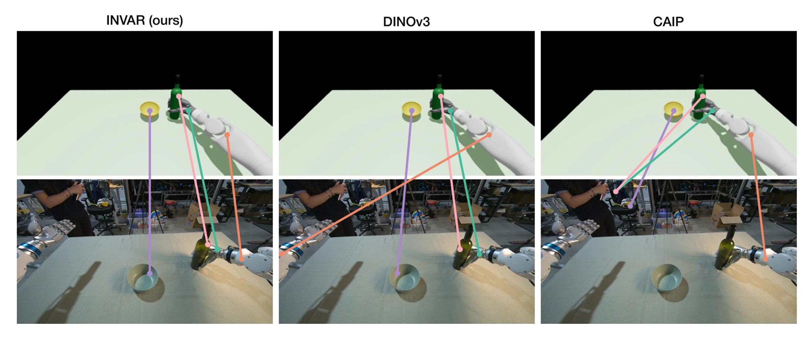
These visualizations show where the encoders respond; they do not measure what causes policy success. The real-robot and human videos were not used to adapt INVAR.
Self-distillation from
state-matched renders.
A simulator can generate paired renders from the exact same underlying state. INVAR uses these pairs for asymmetric self-distillation: the student processes randomized views and learns to match an EMA teacher that receives only clean renders.
Random lighting · materials · table texture · background
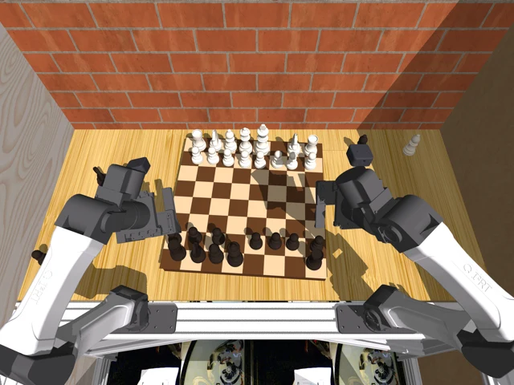
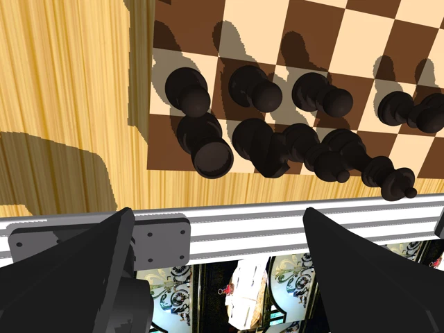
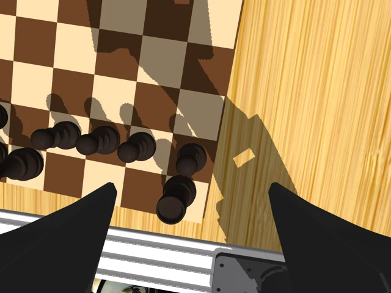
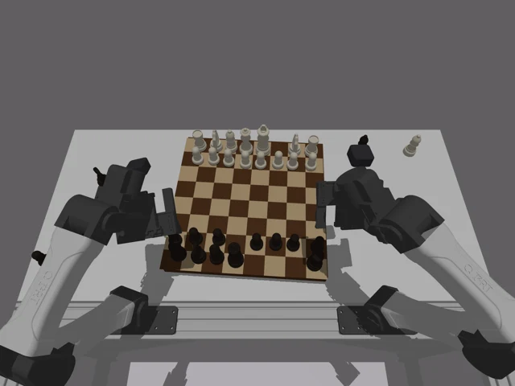
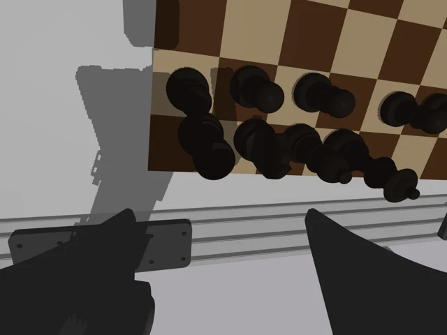
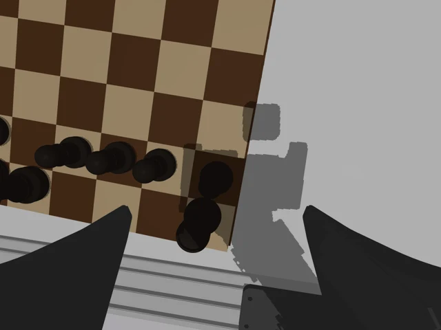
Scroll to explore the full pipeline →
head
head
We use the action probe to choose a checkpoint. It does not update the encoder.
Change the appearance, keep the state.
The robot and objects stay in the same positions. Only the lighting, materials, table texture, and background change.
The feature bars illustrate training; they are not measured outputs.
Full training pipeline and technical details
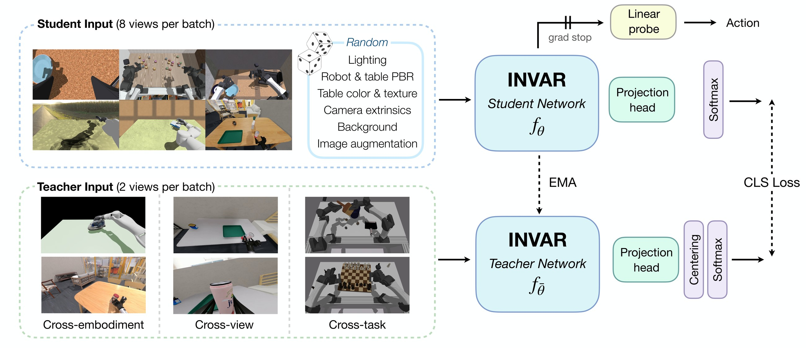
We fine-tune DINOv3 ViT-S+/16 (28.7M parameters) with two teacher crops, eight student crops, and 65,536 prototypes. Training uses teacher centering, sharpening, and EMA updates, with no task labels or rewards in the distillation loss.
We pretrain on approximately 6.3 million clean–randomized image pairs across three simulated embodiments: dexterous hand, parallel gripper, and humanoid. The corpus includes diverse tasks and camera views, with no task labels required for representation learning.
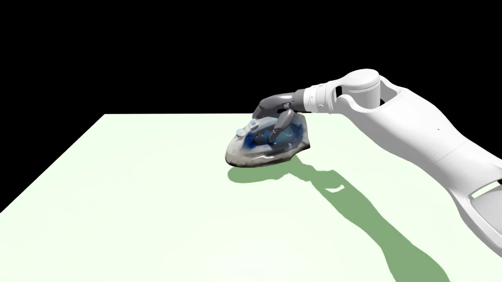
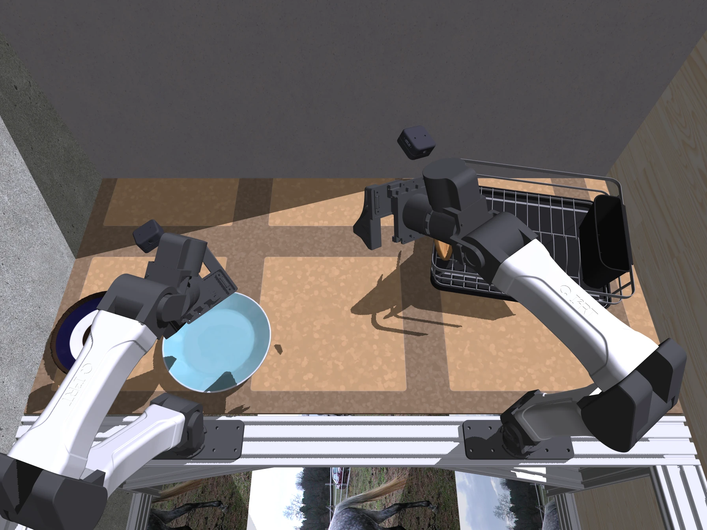
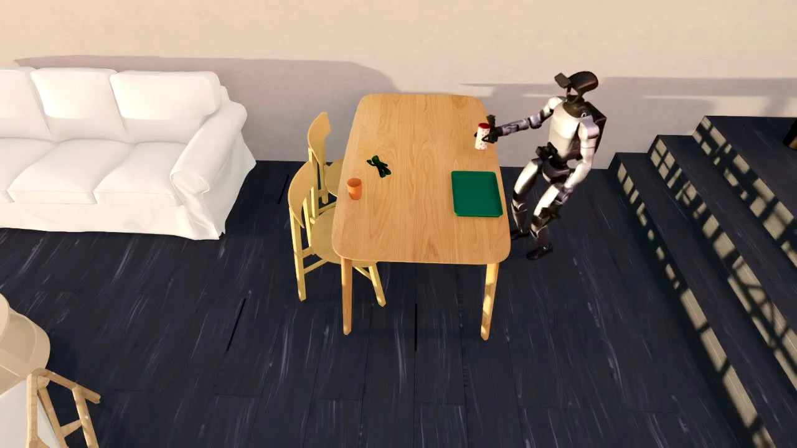
None of the evaluation objects appear in encoder pretraining. Pouring, bottle-in-bin, and mug flipping are also new tasks. Humanoid data is used only for pretraining.
Zero-shot transfer to
unseen objects and tasks.
Policies use a frozen INVAR encoder and train only on nominal simulation data. We evaluate zero-shot transfer to unseen objects across both embodiments; pouring and the parallel-gripper tasks also test unseen manipulation motions.
Pour wine into a bowl
Neither these objects nor the pouring task appears in encoder pretraining.
24 real-world rollouts per method. Strongest evaluated baseline for this task.
Full results and evaluation setup
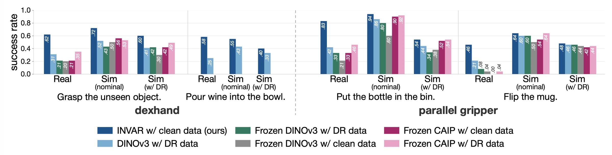
For grasping, we run 25 trials on each of five objects: 125 trials per method. Each other task has 24 real-world trials per method. Simulation tests use 50 episodes per checkpoint. All methods use the same behavior-cloning policy architecture.
| Evaluation suite | INVAR | Strongest suite baseline |
|---|---|---|
| Dexterous manipulation (five grasp objects + pouring) | 0.61 | 0.30 |
| Bimanual parallel gripper (bottles + mug) | 0.65 | 0.32 |
The table reports suite averages; the charts above compare each task with its strongest tested baseline. For pouring, we compare with DINOv3 trained with DR.
Downstream policies
also converge faster.
INVAR also accelerates downstream policy learning, reaching 90% of peak performance about 1.5× faster than the fastest baseline.
faster convergence
The threshold is 90% of each method’s own peak success.Nominal simulation
Simulation with visual DR
Mean training epoch to 90% of each method’s peak success ↓
Averaged across five training runs. Paper Table 1.
Robust to lighting and surface changes.
How pretraining data
affects real-world transfer.
At a fixed pretraining budget, broader embodiment diversity improves real-world transfer. Increasing task and object diversity also helps, and real-world success scales with the number of pretraining pairs.
Paper Table 2. These ablations use 12 real-world trials per task: hammer and spray-bottle grasping, and bottles into a bin. They are separate from the main benchmark.
More ablation results
Cross-embodiment diversity
With one robot type, increasing the grasping set from 5 to 20 objects raises success from 54% to 63%. Increasing gripper tasks from 2 to 5 raises success from 50% to 58%. Adding data from other robot types gives a larger gain.
The asymmetric objective
With the same data, architecture, and training budget, giving randomized images to both networks lowers real-world success from 84% to 42%. Keeping the teacher’s view clean works better.
Visual randomization as a one-time pretraining cost.
Generate the randomized simulation corpus once, pretrain INVAR, and reuse the frozen encoder across downstream policies trained on nominal simulation.
INVAR addresses differences in appearance, not geometry, dynamics, or actuation. We evaluate it with behavior-cloning policies.
Read the paper abstract
Humans know to act consistently across real and simulated environments because they can abstract away visual appearance to what matters for the task. Can robots achieve similar visual invariance? We present INVAR, a visual representation for zero-shot sim-to-real transfer. While classic sim-to-real methods rely on task-specific domain randomization (DR) to train visual encoders and action policies, INVAR distills diverse simulation randomizations into a unified, invariant visual encoder that is self-supervised and scalable. It leverages self-distillation over an unlabeled corpus of simulated play data and robot rollouts without requiring real-world images during representation learning. A policy trained purely on nominal simulation data with a frozen INVAR encoder transfers zero-shot to the real world. INVAR nearly doubles the success rate of identical policies built on state-of-the-art pretrained encoders trained with standard DR, across both dexterous manipulation (0.61 vs. 0.30 mean success) and parallel-gripper manipulation (0.65 vs. 0.32). These results demonstrate that decoupling visual invariance into a task-agnostic encoder unlocks scalable, zero-shot sim-to-real transfer, similar to humans.